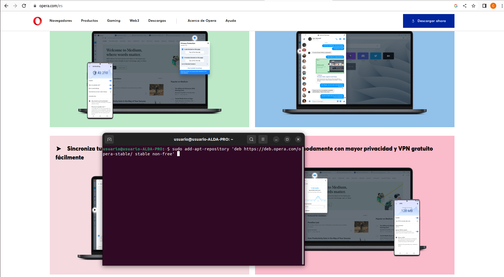
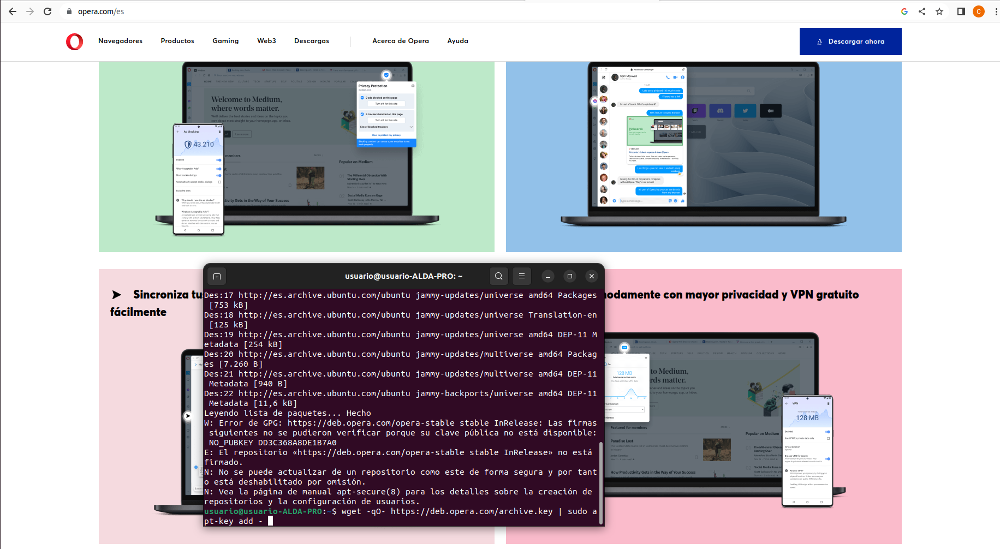
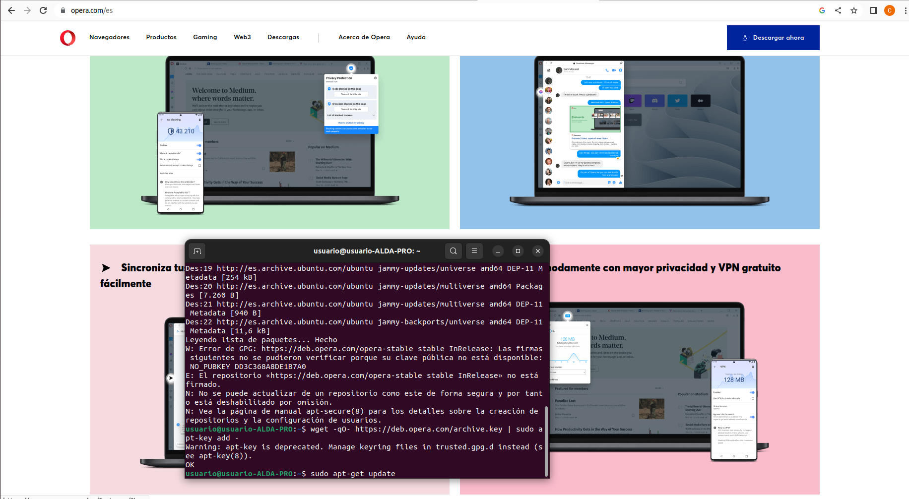
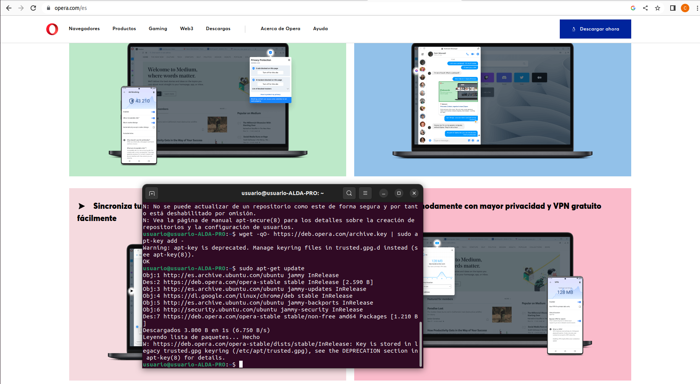
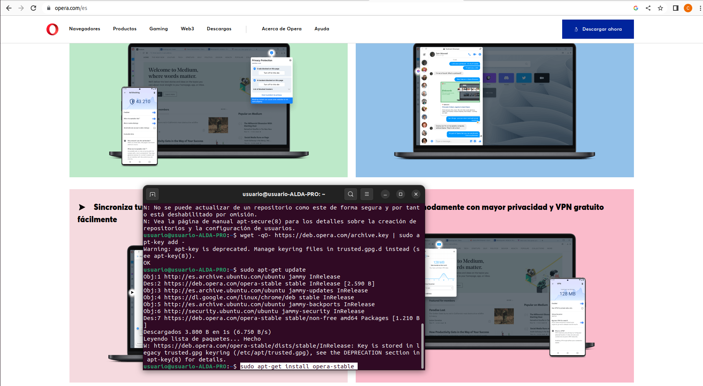
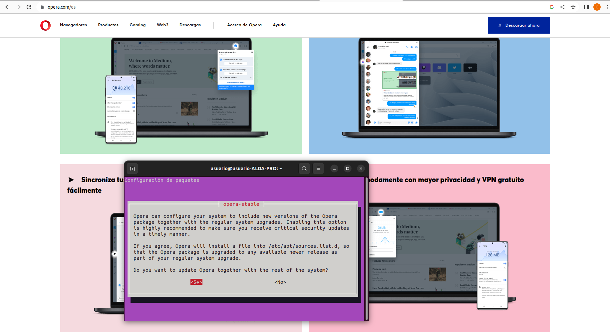
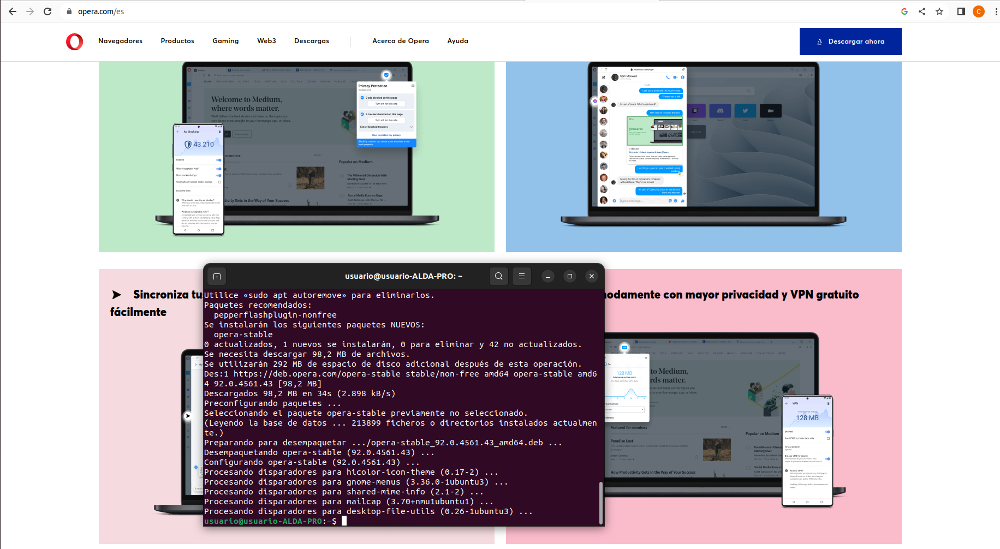
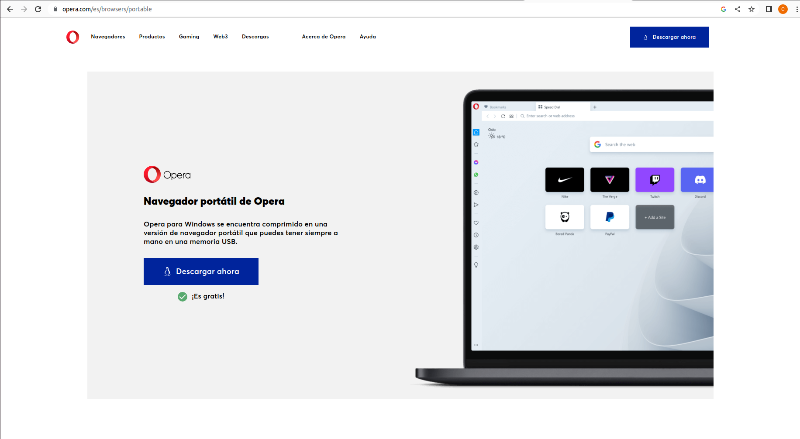

Opera
Tutorial de como descargar Opera para Ubuntu
1º Para poder instalar este software para ubuntu, hace falta lanzar unos cuantos comandos.
2º sudo add-apt-repository 'deb https://deb.opera.com/opera-stable/ stable non-free'

3º wget -qO- https://deb.opera.com/archive.key | sudo apt-key add -

4º sudo apt-get update

5º sudo apt-get install opera-stable



6º Ya tendriamos el S.O instalado, ahora solo hace falta descargarse el software portable.

7º Para descargar el software portable solo hace con darle a descargar, y ya tendríamos nuestro software portable.
